With this lecture: Engels Surplus value and the rate of profit
Contents · 34 slides
- Karl Marx
- Friedrich Engels
- GWF Hegel
- Dialectics
- Dialectics
- Dialectics
- Materialism
- Democritus: Early Materialist
- Ludwig Feurbach: Alienation
- But Dialectical Materialism Is Not Deterministic
- Marx’s Historical Progression of Social Structures
- Marx’s Historical Progression of Social Structures
- Marx’s Historical Progression of Social Structures
- Marx’s Historical Progression of Social Structures
- Marx on Predicting What Was Coming
- Marx’s Historical Progression of Social Structures
- Marx’s Historical Progression of Social Structures
- Class Structure
- The Economic Structure of Society
- The Economic Structure of Society
- Capitalism
- Capitalism
- Capitalism
- Capitalism
- Economic Crises
- Value
- Surplus Value
- Surplus Value
- Surplus Value
- Surplus Value
- The Increasing Misery of the Proletariat
- Alienation from Work
- Politics and Revolution
- What Is Wrong?
1 Karl Marx
- 1818-1883
- Born in Trier, Prussia
- Died in London, England
- Major works:
- The Poverty of Philosophy
- The Communist Manifesto
- Capital (Three Volumes)
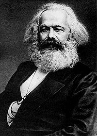
2 Friedrich Engels
- 1820-1895
- Born in Barmen, Prussia
- Died in London, England
- His family were wealthy factory owners
- He was Marx’s financial patron
- All of Marx’s works were, in some sense, a collaboration with Engels
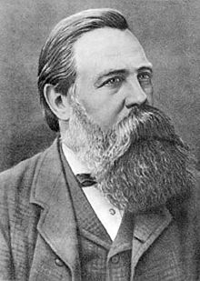
3 GWF Hegel
- 1770-1831
- Born in Stuttgart, Württemberg
- Died in Berlin, Prussia
- Developed dialectical theory
- Philosophical Idealist
- Deeply influential in Germany of 1800s
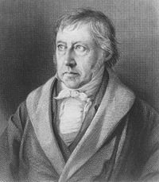
4 Dialectics
- Just as an acorn becomes…
- an oak tree through internal forces.

5 Dialectics
- Just as a tadpole becomes…
- a frog through internal forces.
6 Dialectics
- So feudalism becomes…
- capitalism through internal forces.
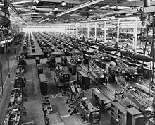
7 Materialism
- But Hegel was “standing on his head.”
- He saw physical world as based on ideas: “the real is the rational.”
- Marx and Engels believed they had to set him right side up.
- Ideas based on physical world: politics, religion, and philosophy are a superstructure built on economics.

8 Democritus: Early Materialist
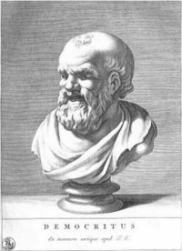
- Taught that the world was made of atoms
- No immortal soul
- The subject of Marx’s doctoral dissertation

9 Ludwig Feurbach: Alienation
- Student of Hegel
- “Religion, at least the Christian religion, is the expression of how man relates to himself, or more correctly, to his essential being; but he relates to his essential being as to another being. The Divine Being is nothing other than the being of man himself, or rather, the being of man abstracted from the limits of the individual man or the real, corporeal man, and objectified, i.e., contemplated and worshiped as another being, as a being distinguished from his own. All determinations of the Divine Being are, therefore, determinations of the being of man.” -- Essence of Christianity
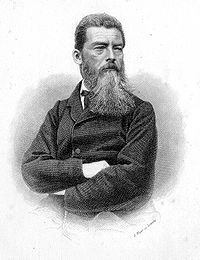
10 But Dialectical Materialism Is Not Deterministic
- “The materialist doctrine that men are products of circumstances and upbringing, and that, therefore, changed men are products of other circumstances, forgets that it is men that change circumstances, and that the educator himself needs educating.” – “Theses on Feurbach”
11 Marx’s Historical Progression of Social Structures
- Primitive Communism: as in co-operative tribal societies.
12 Marx’s Historical Progression of Social Structures
- Slave Society: a development of tribal progression to city-state; Aristocracy is born.
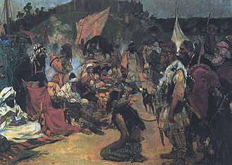
13 Marx’s Historical Progression of Social Structures
- Feudalism: aristocrats are the ruling class; merchants evolve into capitalists.
14 Marx’s Historical Progression of Social Structures
- Capitalism: capitalists are the ruling class, who create and employ the proletariat.
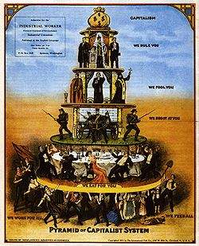
15 Marx on Predicting What Was Coming
- Marx did not wish “to write recipes for the cook-shops of the future.”
- As someone going through this dialectical process himself, he was modest enough to admit he could not see everything that was coming.
- Therefore, Marxist descriptions of the next two phases, socialism and communism, are somewhat vague.
16 Marx’s Historical Progression of Social Structures
- Socialism: workers gain class consciousness, and via proletarian revolution depose the capitalist dictatorship of the bourgeoisie, replacing it in turn with dictatorship of the proletariat through which the socialization of the means of production can be realized.
17 Marx’s Historical Progression of Social Structures
- Communism: a classless and stateless society.(Source: Wikipedia)
18 Class Structure
- Jon Elster on Marx’s Class Schema
- (Source: Wikipedia)
19 The Economic Structure of Society
- Economic relations are relations among people, not among things:
- “In the social production which men carry on they enter into definite relations that are indispensable and independent of their will… The sum total of these relations of production constitutes the economic structure of society, on which rise legal and political superstructures and to which correspond definite forms of social consciousness.” – Critique of Political Economy
20 The Economic Structure of Society
- This theory of economic stages is not economic determinism:
- “once an historic element has been brought into the world by other elements, ultimately by economic facts, it also reacts in its turn and may react on its environment and even on its own causes… Marx and I are ourselves partly to blame for the fact that younger writers sometimes lay more stress on the economic side than is due it. We had to emphasize this main principle in opposition to our adversaries, who denied it…” – Engels from Selected Correspondence
21 Capitalism
- Under feudalism, the peasants knew when they were working for the lord and when they were free.
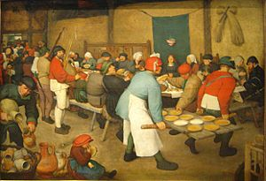
22 Capitalism
- But the unique feature of capitalism, according to Marx, is that it creates the appearance of free labor by those who are really wage slaves.
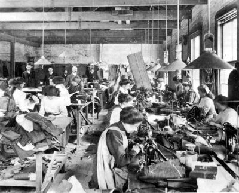
23 Capitalism
- But Marx and Engels admired capitalism in what they saw as its historical role:
- “The bourgeoisie, during its rule of scarce one hundred years, has created more massive and more colossal productive forces than have all preceding generations together.” – The Communist Manifesto
- “Marx… stresses the bad sides of [capitalism] but with equal emphasis… proves [capitalism] was necessary to develop the productive forces of a society to a level which will make possible an equal development worthy of human beings for all members of society.” – Engels review of Capital
24 Capitalism
- And they understood the market process:
- ‘Continual deviations of the prices of commodities from their values are the necessary condition in and through which the value of the commodities as such can come into existence. Only through the fluctuations of competition, and consequently of commodity prices, does the law of value of commodity production assert itself and the determination of the value of the commodity… become a reality. To desire, in a society of producers who exchange their commodities, to establish the determination of value by labour time, by forbidding competition to establish this determination of value through pressure on prices in the only way it can be established, is therefore merely to prove that, at least in this sphere, one has adopted the usual utopian disdain of economic laws… competition, by bringing into operation the law of value of commodity production in a society of producers who exchange their commodities, precisely thereby brings about the only organisation and arrangement of social production which is possible in the circumstances. Only through the undervaluation or overvaluation of products is it forcibly brought home to the individual commodity producers what society requires or does not require and in what amounts. But it is precisely this sole regulator that the utopia[n]… wishes to abolish. And if we then ask what guarantee we have that necessary quantity and not more of each product will be produced, that we shall not go hungry in regard to corn and meat while we are choked in beet sugar and drowned in potato spirit, that we shall not lack trousers to cover our nakedness while trouser buttons flood us by the million [the utopian] triumphantly shows us his splendid calculation, according to which the correct certificate has been handed out for every superfluous pound of sugar, for every unsold barrel of spirit, for every unusable trouser button, a calculation which “works out” exactly, and according to which “all claims will be satisfied and the liquidation correctly brought about”.’
25 Economic Crises
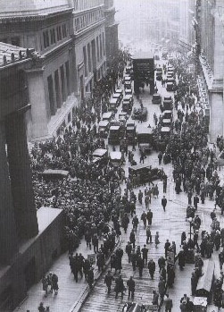
- A series of financial crises will bring down capitalism
- Crises are inherent in capitalism because producers cannot predict the demand of consumers and the supply of other producers
- As capitalism spreads, these crises become more widespread
26 Value
- Value is defined as the amount of socially necessary labor that was needed to produce something.
- Price does not equal value, even under socialism.
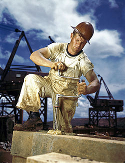
27 Surplus Value
- The worker produces a final product, but the capitalist only pays for his ‘labor power.’
- The difference between the two Marx calls ‘capitalist exploitation.’
28 Surplus Value
- Marx and Engels did not neglect the value of capital. It was the person, the capitalist, whom they thought was dispensable. They believed that capital embodied the value of the past labor that built it.
- Therefore, under communism the worker still would not receive the full value of what he produces; some portion would still need to be re-invested in equipment, infrastructure, and so on.
- They ridiculed the idea of paying for work time as utopian.
29 Surplus Value
- In short, it is not the return to capital that Marx questions, but the return to the capitalist.
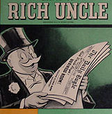
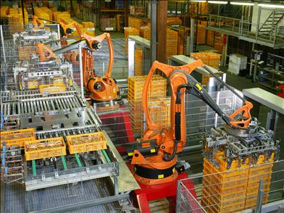
30 Surplus Value
- Surplus value is not necessarily equal to profit for any particular firm.
- (c = fixed capital, v = variable capital, and s = surplus; source: Thomas Sowell, Marxism)
31 The Increasing Misery of the Proletariat
- Marx shared with Ricardo a unique definition of the wage rate: it is the amount of labor a given wage can buy.
- Therefore, workers can be making more in terms of purchasing power, but suffer ‘falling wages,’ if there wage falls relative to others.
- “If capital is growing rapidly, wages may rise: the profit of capital rises incomparably more rapidly. The material position of the worker has improved, but at the cost of his social position.” – “Wage Labour and Capital”
32 Alienation from Work
- Repetitive and mindless tasks on assembly line made worker “a crippled monstrosity.”
- Adam Smith worried about this aspect of the division of labor as well.
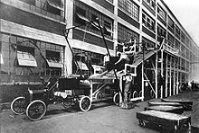
33 Politics and Revolution
- What would the “dictatorship of the proletariat” look like?
- Universal suffrage
- An open society
- Freedom of religion and separation of church and state
- Non-militarism
- Marx and Engels thought that peaceful, democratic revolution was possible.
- They disdained conspiratorial revolutions led by small cadres.
34 What Is Wrong?
- That all value arises from labor is merely asserted – no evidence is given.
- In fact, entrepreneurial judgment is a major component of economic performance.
- Marxism is a glorious structure erected on a foundation of sand.
- The marginal revolution overturned the classical basis for Marx’s conclusions.